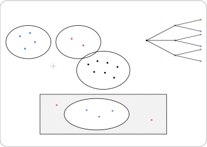
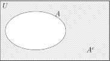

Hoofdstuk 1Algemene telregels

Leerplandoelstellingen (GO! Navigator)
Gevorderde wiskunde (WD3_06.08)
-
• WD3_06.08.33 (MD 06.08.34) De leerlingen lossen telproblemen op met en zonder herhaling en waarbij de volgorde al dan niet van belang is.
-
– afbakening: binomium van Newton
-
– afbakening: driehoek van Pascal
-
– afbakening: duiventilprincipe van Dirichlet
-
Extra uitleg: aantal elementen van een verzameling, kardinaalgetal, somregel, productregel, complementregel, faculteiten
I Tellen van de elementen in een verzameling
In dit nieuwe vak zullen we meer geı̈nteresseerd zijn in het aantal elementen van een verzameling, dan in deze elementen zelf.
1 Notatie
Het aantal elementen van een verzameling \(A\)
\(\seteqnumber{0}{}{0}\)\begin{align*} &= \text {het kardinaalgetal van }A\\ &= \#A\\ &= n(A)\\ \end{align*}
2 Voorbeelden
-
1. \(A\) = Verzameling van de geordende drietallen gevormd met de cijfers 0 en 1
\[ \begin {aligned} \Rightarrow \ &A=\{000,001,010,100,011,101,110,111\},\\ \Rightarrow \ &\#A = 8. \end {aligned} \]
-
2. \(B\) = Verzameling van alle mogelijke lotto-trekkingen
\[ \Rightarrow \ B=\{(2,3,11,23,35,42),\ldots \}. \]
Omdat elk element van \(B\) bestaat uit \(6\) verschillende getallen gekozen uit
\[\{1,2,\ldots ,42\},\]
is
\[ \Rightarrow \ \#B=\binom {42}{6} =\frac {42\cdot 41\cdot 40\cdot 39\cdot 38\cdot 37}{6\cdot 5\cdot 4\cdot 3\cdot 2\cdot 1} =5\,245\,786. \]
II Somregel
1 Voorbeeld
Je wint een prijs op de kermis: je mag een aap kiezen uit een mand A ofwel een beer uit mand B. In mand A zitten 4 verschillende soorten apen en in mand B zitten 2 verschillende soorten beren. Hoeveel mogelijkheden heb je om een prijs te kiezen?
\[ \overset {\text {Aap}}{4} \ \overset {\text {OF}}{+}\ \overset {\text {Beer}}{2} \;=\; 6 \ \text {mogelijkheden}. \]
2 Regel
Een beslissing bestaat eruit één enkele, van 2 elkaar uitsluitende deelbeslissingen te nemen. Als de 1ste deelbeslissing op \(n_1\) manieren mogelijk is en de 2de deelbeslissing op \(n_2\) manieren mogelijk is,dan is de oorspronkelijke beslissing mogelijk op \(n_1 + n_2\) manieren.
\[A\cap B = \emptyset \Rightarrow \#(A\cup B) = \#A + \#B\]
OF betekent +
3 Opmerking
Als \(A\cap B \neq \emptyset \Rightarrow \#(A\cup B) = \#A + \#B - \#(A\cap B)\). Hier komen we later nog op terug.
III Productregel
1 Voorbeeld
Je wint een prijs op de kermis: je mag een aap kiezen uit een mand A en een beer uit mand B. In mand A zitten 4 verschillende soorten apen en in mand B zitten 2 verschillende soorten beren. Hoeveel mogelijkheden heb je om een prijs te kiezen?
\[ A=\{a_1,a_2,a_3,a_4\}\ \Rightarrow \ \#A=4 \]
\[ B=\{b_1,b_2\}\ \Rightarrow \ \#B=2 \]
Notatie:
\[ A\times B=\left \{\{a_1,b_1\},\{a_1,b_2\},\ldots ,\{a_4,b_1\},\{a_4,b_2\}\right \} \]
\[ \Rightarrow \ \#(A\times B)=4\cdot 2=8. \]
2 Regel
Een beslissing bestaat eruit na elkaar en in willekeurige volgorde twee elkaar uitsluitende deelbeslissingen te nemen. Indien de eerste deelbeslissing op \(n_1\) manieren kan genomen worden en de tweede deelbeslissing op \(n_2\) manieren mogelijk is, dan is de oorspronkelijke beslissing mogelijk op \(n_1\cdot n_2\) manieren.
\[\#(A \times B) = \#A \cdot \#B\]
EN betekent \(\cdot \)
IV Oefeningen
Oefening 1
Een club bestaat uit 30 mannelijke en 50 vrouwelijke leden.
-
(a) Hoeveel mogelijkheden zijn er om hieruit één voorzitter te kiezen?
\[ \#=\;\overset {M}{30}\ \overset {\text {OF}}{+}\ \overset {V}{50}\;=\;80 \]
-
(b) Op hoeveel manieren kan men 1 man als secretaris en 1 vrouw als voorzitter kiezen?
\[ \#=\;\overset {M}{30}\ \overset {\text {EN}}{\cdot }\ \overset {V}{50}\;=\;1500 \]
Oefening 2
In een bibliotheek zijn 50 wetenschappelijke verhandelingen, 100 detectiveverhalen en 180 romans beschikbaar.
-
(a) Op hoeveel manieren kan men hieruit 1 boek kiezen?
\[ \#=\;\overset {W}{50}\ \overset {\text {OF}}{+}\ \overset {D}{100}\ \overset {\text {OF}}{+}\ \overset {R}{180} =\;330 \]
-
(b) Op hoeveel manieren kan iemand een lijstje opstellen met één boek van elke soort?
\[ \#=\;\overset {W}{50}\ \overset {\text {EN}}{\cdot }\ \overset {D}{100}\ \overset {\text {EN}}{\cdot }\ \overset {R}{180} =\;900000 \]
Oefening 3
We moeten de afloop van 10 voetbalwedstrijden voorspellen. Voor elke match zijn er 3 mogelijkheden: winnen, verliezen en gelijkspel.
-
(a) Hoeveel lijstjes met voorspellingen zijn er mogelijk?
\[ \text {uitslag 1e wedstrijd}\ \overset {\text {EN}}{\cdot }\ \text {uitslag 2e wedstrijd}\ \overset {\text {EN}}{\cdot }\ \cdots \ \overset {\text {EN}}{\cdot }\ \text {uitslag 10e wedstrijd} \]
\[ =\,3 \ \overset {\text {EN}}{\cdot }\ 3 \ \overset {\text {EN}}{\cdot }\ \cdots \ \overset {\text {EN}}{\cdot }\ 3 = 3^{10}\ \text {mogelijke lijstjes}. \]
-
(b) Hoe groot is het aantal als we zeker weten dat in de eerste wedstrijd de thuisploeg niet verliest?
\[ \#=\;\overset {\text {niet verliest}}{2}\ \overset {\text {EN}}{\cdot }\ 3^{9} \;=\;2\cdot 3^{9} \]
Oefening 4
Voor de samenstelling van je lessenrooster moet je twee keuzevakken kiezen, elk uit een verschillend vakgebied. Er is keuze uit 3 talen, 4 wetenschappelijke vakken en 2 sporten. Hoeveel keuzemogelijkheden heb je?
\[ \#=\; (\overset {T}{3}\ \overset {\text {EN}}{\cdot }\ \overset {W}{4}) \ \overset {\text {OF}}{+}\ (\overset {T}{3}\ \overset {\text {EN}}{\cdot }\ \overset {S}{2}) \ \overset {\text {OF}}{+}\ (\overset {W}{4}\ \overset {\text {EN}}{\cdot }\ \overset {S}{2}) \]
\[ =\;12\ \overset {\text {OF}}{+}\ 6\ \overset {\text {OF}}{+}\ 8 =\;26 \]
Oefening 5
We beschikken over alle letters van het alfabet (6 klinkers en 20 medeklinkers) om anagrammen te vormen.
-
(a) Hoeveel anagrammen zijn er met 1 klinker, gevolgd door 1 medeklinker?
\[ \#=\;\overset {K}{6}\ \overset {\text {EN}}{\cdot }\ \overset {M}{20}\;=\;120 \]
-
(b) Hoeveel anagrammen bestaan er uit 1 klinker tussen 2 medeklinkers?
\[ \#=\;\overset {M}{20}\ \overset {\text {EN}}{\cdot }\ \overset {K}{6}\ \overset {\text {EN}}{\cdot }\ \overset {M}{20} =\;2400 \]
-
(c) Hoeveel anagrammen van 4 letters zijn er die beginnen met een klinker?
\[ \#=\;\overset {K}{6}\ \overset {\text {EN}}{\cdot }\ \overset {\text {alfabet}}{26^3} =\;6\cdot 26^3 \]
-
(d) Hoeveel anagrammen van 4 letters bevatten minstens 1 maal de letter a?
\[ \#=\;\overset {\text {alle}}{26^4}\ \overset {\text {MIN}}{-}\ \overset {\text {zonder }a}{25^4} =\;26^4-25^4 \]
-
(e) Hoeveel anagrammen van 5 letters kan je vormen als de eerste en de laatste letter medeklinkers moeten zijn en de derde een klinker?
\[ \#=\;\overset {M}{20}\ \overset {\text {EN}}{\cdot }\ \overset {\text {alfabet}}{26}\ \overset {\text {EN}}{\cdot }\ \overset {K}{6}\ \overset {\text {EN}}{\cdot }\ \overset {\text {alfabet}}{26}\ \overset {\text {EN}}{\cdot }\ \overset {M}{20} =\;20\cdot 26\cdot 6\cdot 26\cdot 20 \]
Oefening 6
Het letterslot van een kluis bestaat uit een eerste ring met 10 letters, een tweede ring met 8 letters en een derde ring met 6 letters. Om een kluis te openen moet elke ring zo geplaatst worden dat een bepaalde stand inneemt.
-
(a) Hoeveel codes moet een inbreker ten hoogste proberen?
\[ \#=\;\overset {R_1}{10}\ \overset {\text {EN}}{\cdot }\ \overset {R_2}{8}\ \overset {\text {EN}}{\cdot }\ \overset {R_3}{6} =\;480 \]
-
(b) Hoeveel zijn er mogelijk als hij weet dat de letter van de eerste ring een E is?
\[ \#=\;\overset {R_1=\text {E}}{1}\ \overset {\text {EN}}{\cdot }\ \overset {R_2}{8}\ \overset {\text {EN}}{\cdot }\ \overset {R_3}{6} =\;48 \]
Oefening 7
Bij een schoolwedstrijd met 2 ploegen, die elk uit 6 deelnemers bestaan, moet elke deelnemer van de ene ploeg tegen elke deelnemer van de andere ploeg 2 partijen spelen. Hoeveel partijen zijn er in totaal?
\[ \#=\;\overset {P_1}{6}\ \overset {\text {EN}}{\cdot }\ \overset {P_2}{6}\ \overset {\text {EN}}{\cdot }\ \overset {\text {partijen per duel}}{2} =\;72 \]
V Complementregel
1 Voorbeeld
Een klas bestaat uit 20 leerlingen. Hoeveel manieren zijn er om minstens 1 leerling te kiezen uit deze klas?
In plaats van het aantal manieren te berekenen waarop minstens 1 leerling wordt gekozen, is het eenvoudiger om te tellen hoeveel manieren er zijn waarbij geen enkele leerling wordt gekozen. Dit aantal kan dan worden afgetrokken van het totale aantal mogelijkheden.
\[ \#=\;\overset {\text {alle keuzes}}{2^{20}}\ \overset {\text {MIN}}{-}\ \overset {\text {geen gekozen}}{1} =\;2^{20}-1 \]
2 Regel
De Complementregel bij telproblemen stelt dat het aantal manieren om een complementaire gebeurtenis te tellen gelijk is aan het totaal aantal mogelijkheden minus het aantal manieren van de oorspronkelijke gebeurtenis. Symbolisch:
\[ \#\bar {A} = \#U - \#A \]
waarbij:
-
• \(\#U\) het totaal aantal mogelijkheden is,
-
• \(\#A\) het aantal manieren voor de specifieke gebeurtenis is,
-
• \(\#\bar {A}\) het aantal manieren is voor het complement van \(\#A\).
\[ \#(U) = \#(A) + \#(A^c) \quad \Rightarrow \quad \#(A^c) = \#(U) - \#(A) \]
3 Grafisch

4 Voorbeeld
In een bibliotheek zijn 10 boeken. Je moet een selectie maken, waarbij je minstens 2 boeken kiest. Hoeveel manieren zijn er om dit te doen?
\begin{align*} \#U &= 2^{10} \quad (\text {elke combinatie van boeken is mogelijk: gekozen of niet gekozen}) \\ \#\bar {A} &= 1 + 10 \quad (\text {het aantal manieren om géén enkel boek te kiezen of juist één boek te keizen}) \\ \#A &= \#U - \#\bar {A} = 2^{10} - 11 \end{align*}
5 Oefeningen
Oefening 8
Je wil naar de bioscoop gaan en je hebt 5 vrienden. Hoeveel manieren zijn er om minstens 1 vriend te kiezen die meegaat?
\[ \#=\;\overset {\text {alle keuzes}}{2^{5}}\ \overset {\text {MIN}}{-}\ \overset {\text {niemand}}{1} =\;2^{5}-1 =\;31 \]
Oefening 9
Bij een spel met 4 dobbelstenen wil je minstens 1 dobbelsteen hebben die een 6 toont. Hoeveel mogelijkheden zijn er in totaal?
\[ \#=\;\overset {\text {alle worpen}}{6^{4}}\ \overset {\text {MIN}}{-}\ \overset {\text {geen 6}}{5^{4}} =\;6^{4}-5^{4} =\;671 \]
VI Faculteiten
1 Definitie
\begin{align*} \forall n \in \mathbb {N}\backslash \{0,1\}: n!&=n\cdot (n-1)\cdot (n-2)\cdot \cdots \cdot 3\cdot 2\cdot 1\\ 1!&=1\\ 0!&=1\\ \end{align*}
2 Voorbeelden
-
• \(\;0! = \opl {1}\)
-
• \(\;1! = \opl {1}\)
-
• \(\;2! = \opl {2\cdot 1 = 2}\)
-
• \(\;3! = \opl {3\cdot 2\cdot 1 = 6}\)
-
• \(\;4! = \opl {4\cdot 3\cdot 2\cdot 1 = 24}\)
-
• \(\;5! = \opl {5\cdot 4\cdot 3\cdot 2\cdot 1 = 5\cdot 24 = 120}\)
-
• \(\;6! = \opl {6\cdot 5! = 6\cdot 120 = 720}\)
-
• \(\;7! = \opl {7\cdot 6! = 7\cdot 720 = 5040}\)
-
• \(\;8! = \opl {8\cdot 7! = 8\cdot 5040 = 40\,320}\)
-
• \(\;9! = \opl {9\cdot 8! = 9\cdot 40\,320 = 362\,880}\)
-
• \(10! = \opl {10\cdot 9! = 10\cdot 362\,880}\)
3 Berekenen m.b.v. ZRM of GRM
4 Eigenschap
\begin{align*} (n+1)! &= (n+1) \cdot n!\\ n! &= n \cdot (n-1)!\\ \end{align*}
5 Oefeningen
Oefening 10
Bereken zonder ZRM:
-
(a) \(\dfrac {56!}{55!}\)
\(\seteqnumber{0}{}{0}\)\begin{align*} \frac {56!}{55!} &= \frac {56 \cdot \cancel {55!}}{\cancel {55!}}\\ &= 56\,. \end{align*}
-
(b) \(\dfrac {14!}{12!}\)
\(\seteqnumber{0}{}{0}\)\begin{align*} \frac {14!}{12!} &= \frac {14\cdot 13\cdot \cancel {12!}}{\cancel {12!}}\\ &= 14\cdot 13\\ &= 182\,. \end{align*}
-
(c) \(\dfrac {7!}{10!}\)
\(\seteqnumber{0}{}{0}\)\begin{align*} \frac {7!}{10!}&= \frac {\cancel {7!}}{10\cdot 9\cdot 8\cdot \cancel {7!}}\\ &= \frac {1}{10\cdot 9\cdot 8}\\ &= \frac {1}{720}\,. \end{align*}
-
(d) \(\dfrac {12!-10!}{9!}\)
\(\seteqnumber{0}{}{0}\)\begin{align*} \frac {12!-10!}{9!} &= \frac {12\cdot 11\cdot 10 \cdot \cancel {9!} - 10 \cdot \cancel {9!}}{\cancel {9!}}\\ &= 12\cdot 11\cdot 10 - 10\\ &= 10(12\cdot 11 - 1)\\ &= 10(132-1)\\ &= 1310\,. \end{align*}
Oefening 11
Vereenvoudig:
-
(a) \(\dfrac {(n+1)!}{n!}-\dfrac {n!}{(n-1)!}\)
\(\seteqnumber{0}{}{0}\)\begin{align*} \frac {(n+1)!}{n!}-\frac {n!}{(n-1)!} &= \frac {(n+1)\cdot \cancel {n!}}{\cancel {n!}}-\frac {n\cdot \cancel {(n-1)!}}{\cancel {(n-1)!}}\\ &= (n+1)-n\\ &= 1\,. \end{align*}
-
(b) \(\dfrac {(n+1)!}{(n-1)!}-\dfrac {n!}{(n-2)!}\)
\(\seteqnumber{0}{}{0}\)\begin{align*} \frac {(n+1)!}{(n-1)!}-\frac {n!}{(n-2)!} &= \frac {(n+1)\cdot n\cdot \cancel {(n-1)!}}{\cancel {(n-1)!}} -\frac {n\cdot (n-1)\cdot \cancel {(n-2)!}}{\cancel {(n-2)!}}\\ &= n(n+1)-n(n-1)\\ &= n\big ((n+1)-(n-1)\big )\\ &= 2n\,. \end{align*}
-
(c) \(\dfrac {((n+1)!)^2}{n! \cdot (n+2)!}-\dfrac {(n!)^2}{(n-1)! \cdot (n+1)!}\)
\(\seteqnumber{0}{}{0}\)\begin{align*} \frac {((n+1)!)^2}{n!\,(n+2)!}-\frac {(n!)^2}{(n-1)!\,(n+1)!} &= \frac {(n+1)!\cdot \cancel {(n+1)!}}{n!\,(n+2)\cdot \cancel {(n+1)!}} -\frac {n!\cdot \cancel {n!}}{(n-1)!\,(n+1)\cdot \cancel {n!}}\\ &= \frac {(n+1)\cdot \cancel {n!}}{(n+2)\cdot \cancel {n!}} -\frac {n\cdot \cancel {(n-1)!}}{(n+1)\cdot \cancel {(n-1)!}}\\ &= \frac {n+1}{n+2}-\frac {n}{n+1}\\ &= \frac {(n+1)^2-n(n+2)}{(n+1)(n+2)}\\ &= \frac {1}{(n+1)(n+2)}\,. \end{align*}
Oefening 12
Bewijs:
-
(a) \((n+1)!-n!=n\cdot n!\)
\(\seteqnumber{0}{}{0}\)\begin{align*} (n+1)!-n! &= (n+1)\,n!-n!\\ &= \big ((n+1)-1\big )n!\\ &= n\cdot n!\,. \end{align*}
-
(b) \((n+2)!-(n+2)\cdot n! = n\cdot (n+2)\cdot n!\)
\(\seteqnumber{0}{}{0}\)\begin{align*} (n+2)!-(n+2)\,n! &= (n+2)(n+1)n!-(n+2)n!\\ &= (n+2)\big ((n+1)-1\big )n!\\ &= n(n+2)n!\,. \end{align*}
-
(c) \(1\cdot 3 \cdot 5 \cdot \ldots \cdot (2n-3)\cdot (2n-1)\cdot 2^n\cdot n! = (2n)!\)
\(\seteqnumber{0}{}{0}\)\begin{align*} (2n)! &= (1\cdot 2)(3\cdot 4)\cdots \big ((2n-1)\cdot (2n)\big )\\ &= \big (1\cdot 3\cdot 5\cdots (2n-1)\big )\,\big (2\cdot 4\cdot 6\cdots (2n)\big )\\ &= \big (1\cdot 3\cdot 5\cdots (2n-1)\big )\,\big (2^n(1\cdot 2\cdot \cdots \cdot n)\big )\\ &= \big (1\cdot 3\cdot 5\cdots (2n-1)\big )\,2^n\,n!\,. \end{align*}
VII Oefeningen
Zie VBTL - Combinatoriek & Kansrekening, p21 e.v.